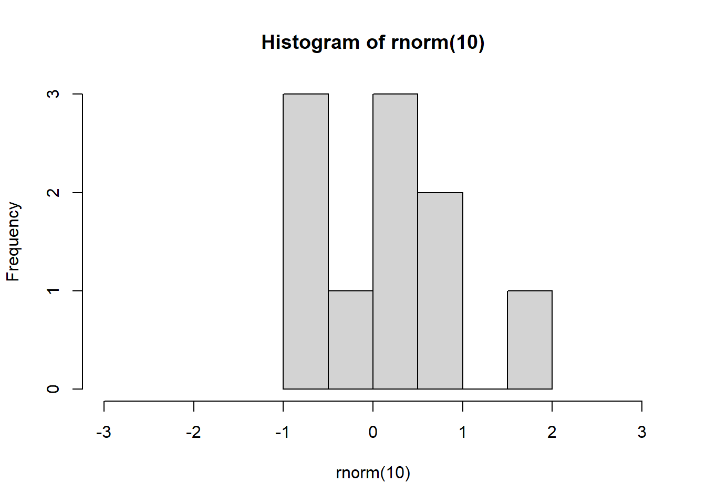
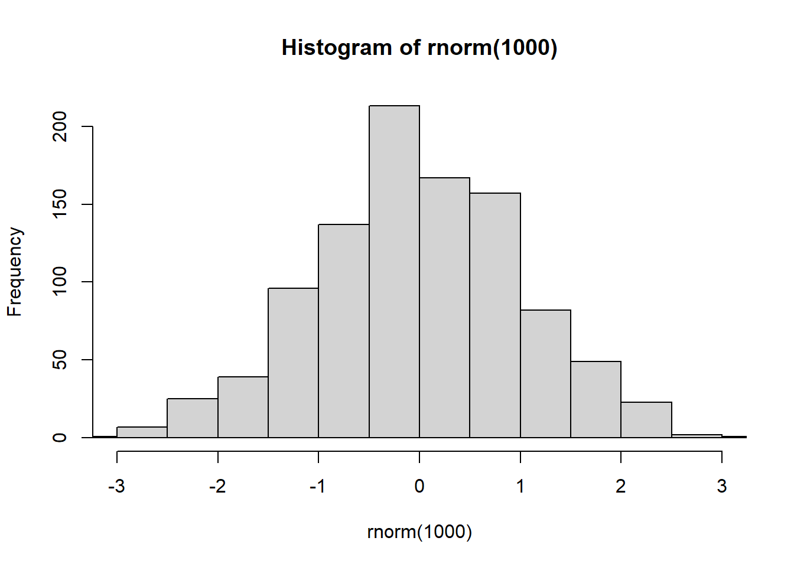
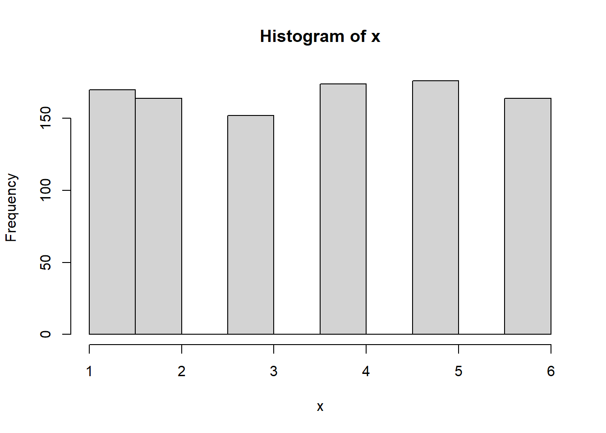
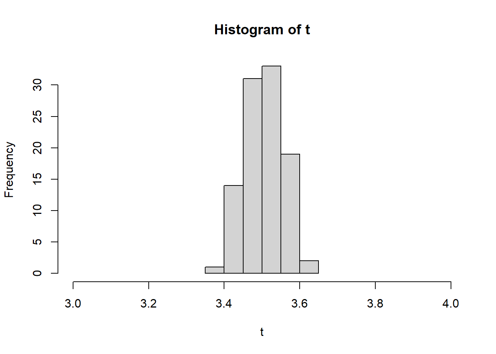
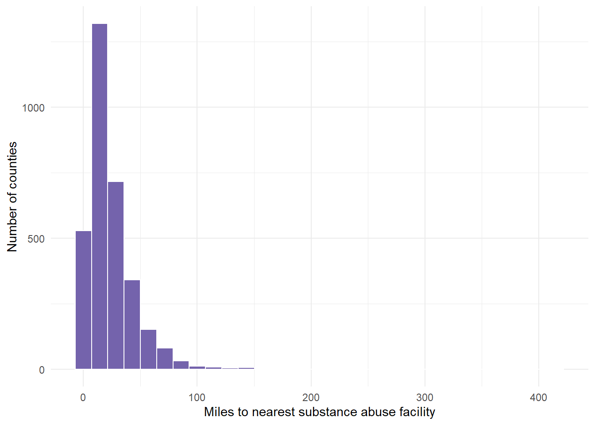
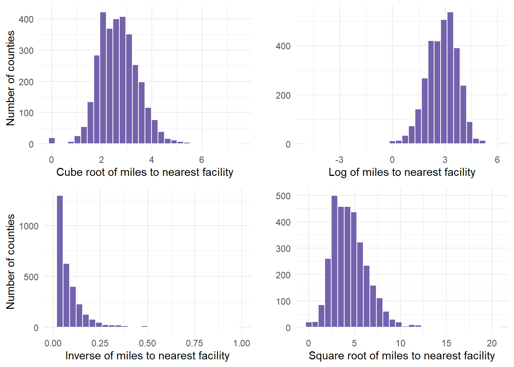
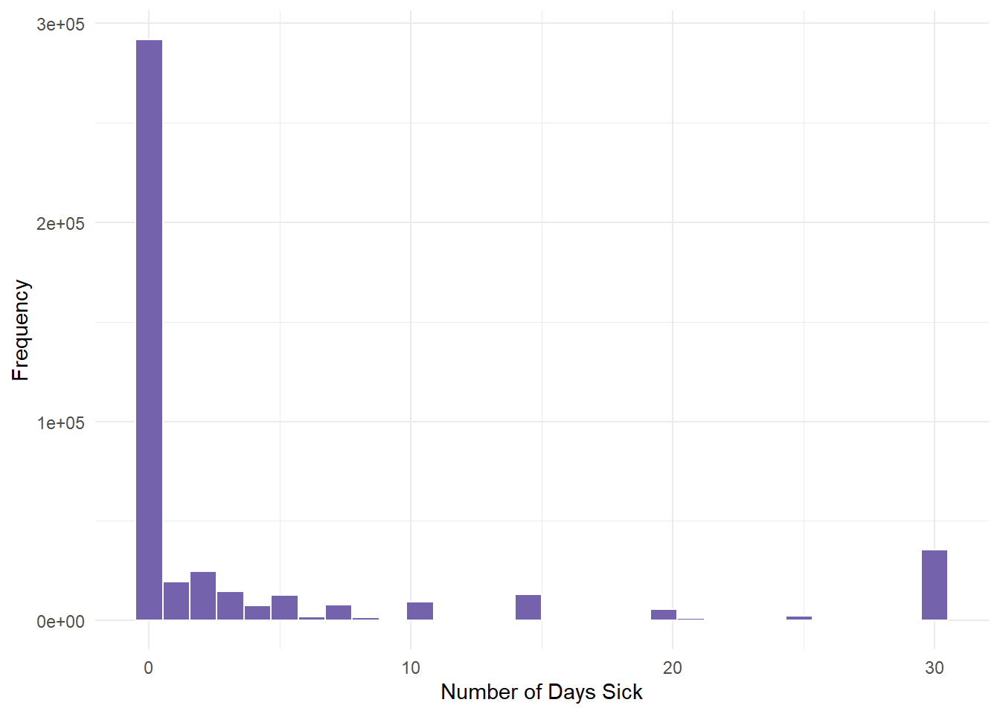
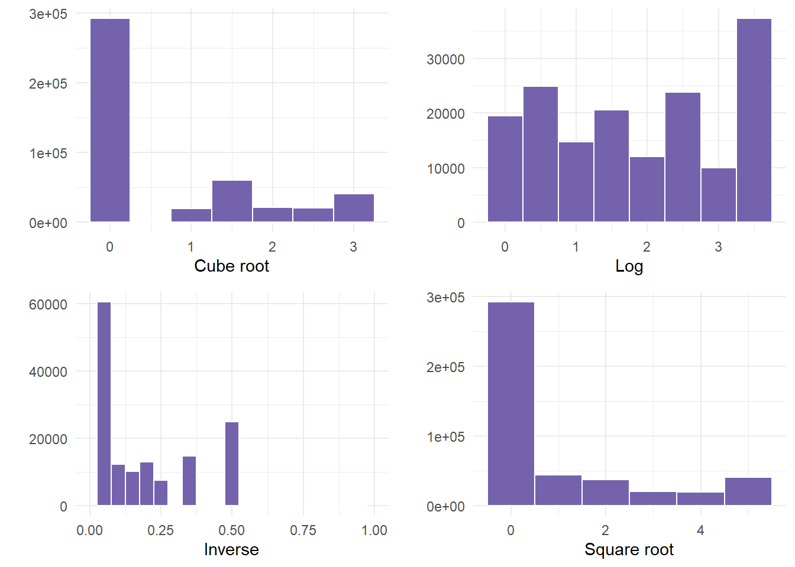

library(tidyverse)
####################################
# Project name: Probability Distributions
# Data used: defects.csv, pdmp_2017.csv, opioidFacility.csv,
# brfss.csv from Blackboard
# Libraries used: tidyverse, gridExtra
####################################6 Central Limit Theorem
- The goal of this lesson is to teach you how to apply the basic rules of probability and discuss some probability distributions. You will also learn how to transform data via tidyverse alongside the power of the central limit theorem.
6.1 Central Limit Theorem (CLT)
CLT refers to the fact that, in many situations, when independent random variables are summed up, their properly normalized sum tends toward a normal distribution even if the original variables themselves are not normally distributed. Therefore, CLT suggests that for any population X with expected value \(\mu\) and standard deviation \(\sigma\) the sampling distribution of \(X\) will be approximately normal if the sample size \(n\) is sufficiently large.
The CLT tells us that, regardless of the original distribution of a population, the sampling distribution of the sample mean approaches a normal distribution as the sample size gets larger. We use the CLT when we want to estimate population parameters (like the mean) from sample data and apply techniques that rely on normality, such as confidence intervals and hypothesis testing. This allows us to make inferences about the population using the normal distribution even when the population itself isn’t normally distributed.
The Central Limit Theorem (CLT) holds true for continuous variables, regardless of whether they are normally distributed or not. Generally, the normal distribution approximation is justified when the sample size is sufficiently large, typically \(n≥30\). If the sample means are approximately normal, we can transform them into a standard normal form. The standard deviation of the sample means (also called the standard error) can be estimated using the population standard deviation and the sample size that makes up the distribution.
If \(\bar{X}\) is approximately normal, then we can transform it using an updated formula of the z-score formula with standard error \(𝑍=(𝑋- \mu)/(\sigma/\sqrt(n))\)
Next, we want to create an experiment where we simulate why the CLT holds true. The rnorm() command pulls random data from a normal distribution. However, even when the sample is small, it can appear not normal - even though it is from a normal distribution.
set.seed(1)
# Sample of n = 10
hist(rnorm(10), xlim = c(-3, 3))
- If we increase the sample size, we should all see a nice normal bell shape distribution like the one below.
set.seed(1)
# Sample of n = 1000
hist(rnorm(1000), xlim = c(-3, 3))
The x limits are set from -3 to 3 because a normal distribution follows the empirical rule discussed above (almost all data is within 3 sd of the mean).
Relating this to the CLT, the CLT states that the sum or mean of a large number of independent observations from the same underlying distribution has an approximate normal distribution. If we were to take a 6 sided dice, in any given roll, we would expect the average. This means that the expected value E(X) will be the mean as discussed above.
# Creating a sample
d <- 1:6
# Calculating the expected value E(X) which equals the population
# mean
mean(d) #3.5[1] 3.5- Rolling a dice only one time would not give us enough data to assume a normal distribution under the CLT. However, if we were to roll a higher number of times, and repeat that experiment \(n\) number of times, we would expect that as \(n\) grows, we would approach a normal distribution.
# First, let's roll the dice 1000 times. We would expect the average
# like shown below.
set.seed(1)
NumberofRolls <- 1000
x <- sample(d, NumberofRolls, replace = TRUE)
# The mean(x) is 3.514 and our mean of 1 through 6 is 3.5. We
# estimated about the average.
mean(x)[1] 3.514hist(x)
- Next, if we repeat the dice roll experiment that we ran 1,000 times above, we can see the normal distribution start to take shape. The example below has a loop for simulation purposes. This loop rolls x with allowed values 1 to 6 - 1,000 times - and then does that 100 times. The more we do this, the closer we get to approximating the mean (3.5) as our histogram starts to get more narrow.
set.seed(1)
t <- 0
for (i in 1:100) {
NumberofRolls <- 1000
x <- sample(d, NumberofRolls, replace = TRUE)
t[i] <- mean(x)
}
hist(t, xlim = c(3, 4))
- Important to note that for any sample size \(n\), the sampling distribution of \(\bar{x}\) is normal if the population X from which the sample is drawn is normally distributed, meaning, there is no need to use CLT.
6.2 Transformations of Variables
If data is not normally distributed, we need to conduct a transformation. When we transform a variable, we hope to change the shape to normal so that we can continue to calculate under the rules of the normal distribution. For variables that are right skewed, a few transformations that could work to make the variable more normally distributed are: square root, cube root, reciprocal, and log.
First, read in the opioid data set from so we can see a variable that is considered not normal.
# Distance to substance abuse facility with medication-assisted
# treatment
dist.mat <- read.csv("data/opioidFacility.csv")
# Review the data
summary(dist.mat) STATEFP COUNTYFP YEAR INDICATOR
Min. : 1.00 Min. : 1.0 Min. :2017 Length:3214
1st Qu.:19.00 1st Qu.: 35.0 1st Qu.:2017 Class :character
Median :30.00 Median : 79.0 Median :2017 Mode :character
Mean :31.25 Mean :101.9 Mean :2017
3rd Qu.:46.00 3rd Qu.:133.0 3rd Qu.:2017
Max. :72.00 Max. :840.0 Max. :2017
VALUE STATE STATEABBREVIATION COUNTY
Min. : 0.00 Length:3214 Length:3214 Length:3214
1st Qu.: 9.25 Class :character Class :character Class :character
Median : 18.17 Mode :character Mode :character Mode :character
Mean : 24.04
3rd Qu.: 31.00
Max. :414.86 # Graph the distance variable which is called Value but represents
# miles. Note that this graph does not look normal - instead, it
# looks right or positive skewed.
dist.mat %>%
ggplot(aes(VALUE)) + geom_histogram(fill = "#7463AC", color = "white") +
theme_minimal() + labs(x = "Miles to nearest substance abuse facility",
y = "Number of counties")
Next, transform the variable to the 4 recommended transformations to see which one works best. We cannot see that result yet until we graph these results.
- This requires 4 separate calculations using mutate() commands.
dist.mat.cleaned <- dist.mat %>% mutate(miles.cube.root = VALUE^(1/3)) %>% mutate(miles.log = log(x = VALUE)) %>% mutate(miles.inverse = 1/VALUE) %>% mutate(miles.sqrt = sqrt(x = VALUE))Now, graph the variable with the 4 recommended transformations to see which is most normal (bell shaped).
cuberoot <- dist.mat.cleaned %>%
ggplot(aes(x = miles.cube.root)) + geom_histogram(fill = "#7463AC",
color = "white") + theme_minimal() + labs(x = "Cube root of miles to nearest facility",
y = "Number of counties")
logged <- dist.mat.cleaned %>%
ggplot(aes(x = miles.log)) + geom_histogram(fill = "#7463AC", color = "white") +
theme_minimal() + labs(x = "Log of miles to nearest facility", y = "")
inversed <- dist.mat.cleaned %>%
ggplot(aes(x = miles.inverse)) + geom_histogram(fill = "#7463AC", color = "white") +
theme_minimal() + xlim(0, 1) + labs(x = "Inverse of miles to nearest facility",
y = "Number of counties")
squareroot <- dist.mat.cleaned %>%
ggplot(aes(x = miles.sqrt)) + geom_histogram(fill = "#7463AC", color = "white") +
theme_minimal() + labs(x = "Square root of miles to nearest facility",
y = "")- We can show all 4 graphs at one time to directly compare. Ensure your plot window is large enough to see this.
gridExtra::grid.arrange(cuberoot, logged, inversed, squareroot)
Finally, determine if any of the transformations help. In this example, we determined that the cuberoot had the most normal transformation. The cube root graph contains a nice bell shape curve.
Let’s use that new variable in the analysis. Start by summarizing the descriptive statistics, including retrieving the mean and standard deviation for cube root of miles, which are values that are required in the probability calculations.
dist.mat.cleaned %>%
drop_na(miles.cube.root) %>%
summarize(mean.tran.dist = mean(x = miles.cube.root), sd.tran.dist = sd(x = miles.cube.root)) mean.tran.dist sd.tran.dist
1 2.662915 0.7923114- 2.66 and .79 are the values we pulled for mean and standard deviation. We can use that information to calculate probabilities based on the functions we mentioned above.
- So, what happens if the cuberoot of X < 3 or less than 27 miles from the facility?
- We estimate that about 66% of counties fall in the shaded area, having to travel less than 27 miles to nearest facility (27 = 3^3).
- This means that (1- 0.6665403)*100 is the percentage of countries having to travel more than 27 miles to the nearest facility.
27^(1/3)[1] 33^3[1] 27# P(X< cuberoot(27) = P(X < 3)
pnorm(3, 2.66, 0.79) ##about 66% likely[1] 0.6665403# P(X > 3) #about 33% likely
pnorm(3, 2.66, 0.79, lower.tail = FALSE)[1] 0.33345971 - pnorm(3, 2.66, 0.79)[1] 0.3334597- We estimate that about 20% of counties fall in the shaded area, having to travel < 8 miles to nearest facility (8 = 2^3).
pnorm(2, 2.66, 0.79)[1] 0.2017342- We can use the equation to calculate the z-score for a county where you have to drive 15 miles to a facility.
## z = (x-m)/sd since we are in cube root - we multiply x by ^1/3
(15^(1/3) - 2.66)/0.79[1] -0.2453012The transformed distance of a facility 15 miles away is .24 standard deviations LOWER than the mean transformed distance.
Next, we can calculate z for a county with residents who have to travel 50 miles to the nearest facility. In the transformed miles variable, this would be the cube root of 50, or a value of 3.68.
(50^(1/3) - 2.66)/0.79 #[1] 1.296242[1] 1.296242- This indicated that the transformed distance to a facility with MAT for this example county was 1.29 standard deviations above the mean transformed distance from a county to a facility with MAT.
6.2.1 Transformation Second Example
- Taking a second example, let us look at the PHYSHLTH variable from the gender dataset (brfss.csv). We worked with this dataset in an earlier lesson. In doing so, we cleaned the data.
- I copied over that data preparation code in regards to the variable of interest (PHYSHLTH), and tidied it up for one example. To remind ourselves, the question being asked was the following, “Now thinking about your physical health, which includes physical illness and injury, for how many days during the past 30 days was your physical health not good?”
- If ever you are using the MASS package and dplyr, the select function may have a conflict where R does not know which to use. If you get an error when using select, add dplyr:: in front of the statement to ensure you are using select from dplyr to select variables.
#
gender <- read.csv("data/brfss.csv")
# Review the data
summary(gender) TRNSGNDR X_AGEG5YR X_RACE X_INCOMG
Min. :1.000 Min. : 1.000 Min. :1.000 Min. :1.000
1st Qu.:4.000 1st Qu.: 5.000 1st Qu.:1.000 1st Qu.:3.000
Median :4.000 Median : 8.000 Median :1.000 Median :5.000
Mean :4.059 Mean : 7.822 Mean :1.992 Mean :4.481
3rd Qu.:4.000 3rd Qu.:10.000 3rd Qu.:1.000 3rd Qu.:5.000
Max. :9.000 Max. :14.000 Max. :9.000 Max. :9.000
NA's :310602 NA's :94
X_EDUCAG HLTHPLN1 HADMAM X_AGE80
Min. :1.000 Min. :1.000 Min. :1.000 Min. :18.00
1st Qu.:2.000 1st Qu.:1.000 1st Qu.:1.000 1st Qu.:44.00
Median :3.000 Median :1.000 Median :1.000 Median :58.00
Mean :2.966 Mean :1.108 Mean :1.215 Mean :55.49
3rd Qu.:4.000 3rd Qu.:1.000 3rd Qu.:1.000 3rd Qu.:69.00
Max. :9.000 Max. :9.000 Max. :9.000 Max. :80.00
NA's :208322
PHYSHLTH
Min. : 1.0
1st Qu.:20.0
Median :88.0
Mean :61.2
3rd Qu.:88.0
Max. :99.0
NA's :4 # PHYSHLTH example
gender.clean <- gender %>%
dplyr::select(PHYSHLTH) %>%
drop_na() %>%
# Turn the 77 values to NA, since 77 meant don't know or not sure
# from the brss codebook
mutate(PHYSHLTH = na_if(PHYSHLTH, y = 77)) %>%
# Turn the 99 values to NA, since 99 meant Refuled from the brss
# codebook.
mutate(PHYSHLTH = na_if(PHYSHLTH, y = 99)) %>%
# Recode the 88 values to 0 - since the number 88 meant 0 days of
# illness from the brss codebook.
mutate(PHYSHLTH = recode(PHYSHLTH, `88` = 0L))
table(gender.clean$PHYSHLTH)
0 1 2 3 4 5 6 7 8 9 10
291696 19505 24890 14713 7644 12931 2140 8049 1478 325 9437
11 12 13 14 15 16 17 18 19 20 21
133 908 92 4558 8638 221 153 279 51 5554 1111
22 23 24 25 26 27 28 29 30
132 80 98 2270 149 204 831 390 35701 summary(gender.clean) PHYSHLTH
Min. : 0.000
1st Qu.: 0.000
Median : 0.000
Mean : 4.224
3rd Qu.: 3.000
Max. :30.000
NA's :10299 qnorm(0.95, mean = 500, sd = 10)[1] 516.4485- Once here, we graph PHYSHLTH.
gender.clean %>%
ggplot(aes(PHYSHLTH)) + geom_histogram(fill = "#7463AC", color = "white") +
theme_minimal() + labs(x = "Number of Days Sick", y = "Frequency")
We determined from the descriptive statistics lesson that this variable had severe skewness (positive). Most people had 0 days of illness.
Next, we run the 4 calculations by mutating the variable and saving all 4 transformation under new variable names.
genderTransform <- gender.clean %>%
mutate(phy.cube.root = PHYSHLTH^(1/3)) %>%
mutate(phy.log = log(x = PHYSHLTH)) %>%
mutate(phy.inverse = 1/PHYSHLTH) %>%
mutate(phy.sqrt = sqrt(x = PHYSHLTH))- Next, we create the 4 graphs for each of the 4 transformations labelled above to see if one helps.
cuberoot <- genderTransform %>%
ggplot(aes(x = phy.cube.root)) + geom_histogram(fill = "#7463AC", color = "white",
binwidth = 0.5) + theme_minimal() + labs(x = "Cube root", y = "")
logged <- genderTransform %>%
ggplot(aes(x = phy.log)) + geom_histogram(fill = "#7463AC", color = "white",
binwidth = 0.5) + theme_minimal() + labs(x = "Log", y = "")
inversed <- genderTransform %>%
ggplot(aes(x = phy.inverse)) + xlim(0, 1) + geom_histogram(fill = "#7463AC",
color = "white", binwidth = 0.05) + theme_minimal() + labs(x = "Inverse",
y = "")
squareroot <- genderTransform %>%
ggplot(aes(x = phy.sqrt)) + geom_histogram(fill = "#7463AC", color = "white",
binwidth = 1) + theme_minimal() + labs(x = "Square root", y = "")- Finally, we plot the graphs using gridExtra so that we can see all 4.
gridExtra::grid.arrange(cuberoot, logged, inversed, squareroot)
- In this example, NOT ONE transformation helped. If this happens, something else would need to occur before correctly using the variable. Examples could be to run a non-linear model, or categorizing the data into bins, especially since there was a large frequency of people that were not ill.
6.3 Using AI
Use the following prompts on a generative AI, like chatGPT, to learn more about probability and contingency tables.
What are the key characteristics of a probability distribution, and how do you determine whether a given set of values represents a valid probability distribution?
What is the difference between a discrete and a continuous random variable, and how do the probability distributions differ for each type?
How do you calculate the expected value and variance for a discrete random variable, and why are these summary measures important in understanding probability distributions?
What are the properties of a binomial distribution, and how is it used to calculate the probability of a certain number of successes in a fixed number of trials?
How do you use the dbinom() and pbinom() functions in R to calculate the probability of exact or cumulative successes in a binomial experiment?
What is a normal distribution, and how do you calculate z-scores to determine how far an observation is from the mean of a normally distributed variable?
How do you interpret and calculate cumulative probabilities for both discrete and continuous variables using the cumulative distribution function (CDF)”
What is the Central Limit Theorem (CLT), and why is it important when working with large samples and understanding the distribution of sample means?
When data is not normally distributed, what transformations can you apply to make the data more normally distributed, and how do you determine which transformation is most effective?
How do you apply probability functions such as pnorm() and qnorm() in R to solve real-world problems, such as calculating the likelihood of events based on normal distributions?
6.4 Summary
In this lesson, we learned about the basic rules of probability alongside the binomial distribution and continuous distribution. We learned about the normal distribution and the limitations of using that distribution. We also learned how to transform variables that were not normal.
In a normal distribution, we used 3 main formulas with the pnorm() function. Each formula has a different role, but they all provide a way to assess variability relative to an average value, allowing for comparisons and inferences about the data or sample in question.